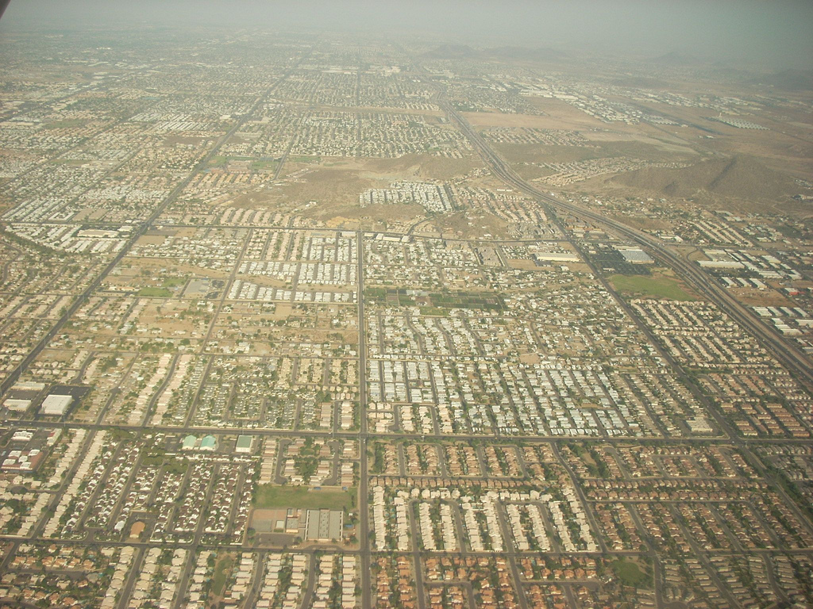

I am not a designer
This session was tagged webdesign, but I am not a designer, let's get that out the way now. I am a front end developer, I get tasked with taking our designer's ideas and making them real. And I am interested in the best ways to do it.
CSS Laid Out
So what do I mean by CSS laid out? I'm simply talking about how we lay sites out in CSS. As web developers, we've been doing it for ages now. However there have only been a few ways of doing it, up until now.
Tables
Of course, before CSS, before we had the power do everything we do today independent of markup, we laid our sites out with tables. How many people here have done that? I was fortunate enough to never have to do that professionally though. Except for HTML emails of course
You may be wondering why I'm showing this picture for HTML emails... I'm not entirely sure myself, but it came up in my Flickr search for the last picture of tables and I had to use it. Maybe writing HTML emails hypnotises us and regresses us to the past... much like bacon can. The important thing is that other than HTML emails, we have moved on from tables for layout.
Modern CSS layout methods
So, if you were going to lay out a site today, what would be the first layout tool you'd reach for?
Floats
All we really wanted to do with floats was have our text flow around images. Probably images of cats, since we're on the Internet. This cat, for example, is pretty fat. He looks lazy too, but he doesn't care. Being a cat is a good life if you can get it. Purrrrfect.
This is all that was ever intended for floats. And look how far they've come. Once we dropped tables for layout, floats became the defacto way to lay out a website, yet this was never their job. We've battled the various problems that using floats for this for years and we have solid ways of consistently clearing floats, containing floats, faking equal height columns. So I think we need a change. Let's look at some other layout methods.
Modern CSS layout methods
Floats
Tables
Flexbox
Grids
So what else can we use for layouts in the modern web? I see three other options. One you might recognise, two of which are a lot newer. Tables, Flexbox and Grids.
Floats
As I said, floats are pretty well known by now but what I intend to do today is show you an example layout and how we would build that using different layout techniques. I thought I'd need something relatively familiar, so we can all start with something we know. So I picked a floated layout that you're probably aware of.
Bootstrap is a great example of one of those fancy grid based layouts that's fluid and responsive and fairly hard to do correctly first time.
Demo
Let's take a quick at that layout.
Yes, I realise what this looks like, but we can't get away from the fact that many sites need to be responsive these days, so these examples will show how our layouts will react to different screen sizes too, by changing the size of the browser.
Tables
I'm not suggesting we go back to the dark ages. Here, I'm actually talking about display:table.
display:table
Display table gives us the ability to make our elements behave like tables. It was the dream of anyone who had grown up making layouts in tables.
You might now be wondering why I'm bringing this up, display:table was part of CSS 2 from back in 1998. Surely support is excellent?
There we go, support is excellent, except for with the elephants of IE6 and 7 in the room. Since display:table was recommended and released, Internet Explorer was a thorn in the side of the developer that wanted to use it. But I would argue now, that if you do not need to support IE7, then display table is a viable way to lay your sites out now. So what can you do with it?
display:table
display:table;
display:table-row;
display:table-cell;
Issues
Divs that look like tables
Different behaviours of table cells
Tables aren't very responsive
Flexbox
Flexbox is one of the new and exciting layout methods afforded to us in CSS3. It is a model that has been planned to make laying things out on the web more natural and fitted to our needs better. It has been through lots of iterations and you will find that there are multiple implementations of it, but the w3c has settled on a standard now and browsers are starting to implement it now.
Flexbox
.container{
display:flex;
}
So, all you have to do to trigger a flex box layout is call display flex on a containing element and the child elements will start to work as flex boxes. This, by default lays its children out left to right.
Flexbox
.container{
display:flex;
flex-direction:row / row-reverse /
column / column-reverse;
}
flex direction can change the default behaviour
Flexbox
.container{
display:flex;
justify-content: flex-start / flex-end / center /
space-around / space-between;
}
justify content tells the browser how to position the items within the flex box
Flexbox
.container{
display:flex;
align-items: flex-start / flex-end / center /
baseline / stretch;
}
align items is the same, but for the cross axis, stretch is useful as it makes horizontally laid out items stretch to the height of the box. no more faux columns!
Demo
Let's see what we can do with that.
sadly not so well supported
Further reading
sadly not so well supported
Grids

Grids are the new exciting layout method, created by Microsoft, and now picked up as a working draft by the w3c. Let's get the support question out of the way first.
so, yeah, only available, vendor prefixed, in IE10.
Grids
.container{
display:grid;
grid-columns: 3fr 1fr;
}
Grids
.container{
display:grid;
grid-columns: (3fr 1fr)[11] 3fr;
}
Grids
.grid-element{
grid-column:1;
grid-row:1;
grid-column-span:5;
grid-row-span: 3;
}
Issues
Support (obvs )
Difficult to apply to variable lengths of items (use other techniques instead, like flexbox)
Use it now?
Of course! Windows 8 apps!
What to do?
Use display:table now! (if you like tables)
Try flexbox, try grids, they are real now and they are the future